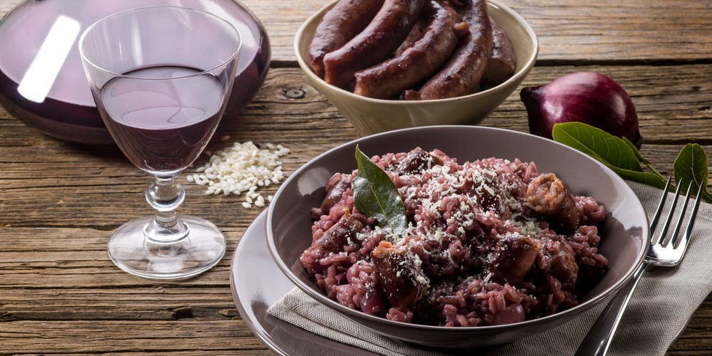
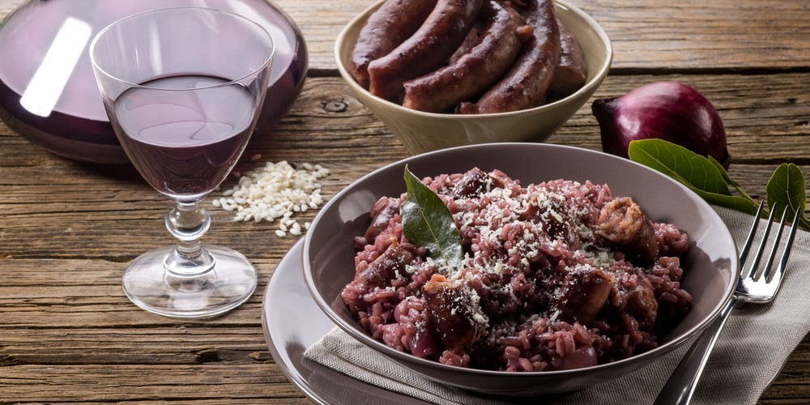

En esta receta les explicamos como hacer risotto de manera clásica, pero con la técnica pueden agregarle lo que
quieran y hacer un risotto con sus ingredientes favoritos ya sean verduras o panceta por ejemplo. Lo más
importante y el secreto es tener un buen caldo, así que no escatimen en cantidad ni sabor. Es lo que le va a dar
el gusto especial al arroz.
Hablando del arroz, es clave que usemos un arroz capaz de absorber líquido y darnos almidón para la cremosidad.
Entonces tenemos que usar un arroz redondo, muy rico en almidón, como el carnaroli. Si no tienen, pueden
conseguir doble carolina que también queda copado.
Jamás usen un arroz de los que nunca se pasan. Van a cocinar cualquier cosa menos risotto ya que nunca lograrán
espesar su consistencia húmeda y cremosa, se los aseguro!
Ingredientes
Para 4 Porciones
400 g arroz para risotto
1 litro caldo de pollo o verduras
2 tazas vino tinto
2 cebolla grande o una pequeña picada en cubitos
30 g mantequilla
60 g parmesano rallado
sal a gusto
pimienta y aceite de oliva
Pasos
Calentar el caldo de verduras o pollo en una olla a fuego bajo. El caldo debe contener la sal deseada
para
la preparación.
En un sartén wok o sartén grande, añadimos unas tres cucharadas de aceite de oliva y sofreímos la
cebolla a
fuego medio.
Cuando la cebolla empiece a dorarse, añadimos el arroz y se sofríe con la cebolla hasta que el arroz se
ponga de color blanco.
Luego añadimos las dos tazas de vino, aumentamos la llama del fuego y revolvemos hasta que se evapore el
alcohol y la cantidad de líquido baja a la mitad.
Bajamos la llama a medio y se va incorporando el caldo de verduras o pollo (caliente) poco a poco,
hasta
terminar el caldo. SIEMPRE se debe revolver de forma envolvente.
Cuando el arroz esté al dente, se añade la mantequilla, la pimienta y el queso parmesano, se mezcla
todo.
Servir y añadir queso parmesano sobre el risotto.
¡¡Mirate el video de preparación!!
Lugar donde podemos encontrar este Plato
Contacto si tenes dudas
En estas redes sociales nos encontras ¡¡¡Buscanos!!!
 
